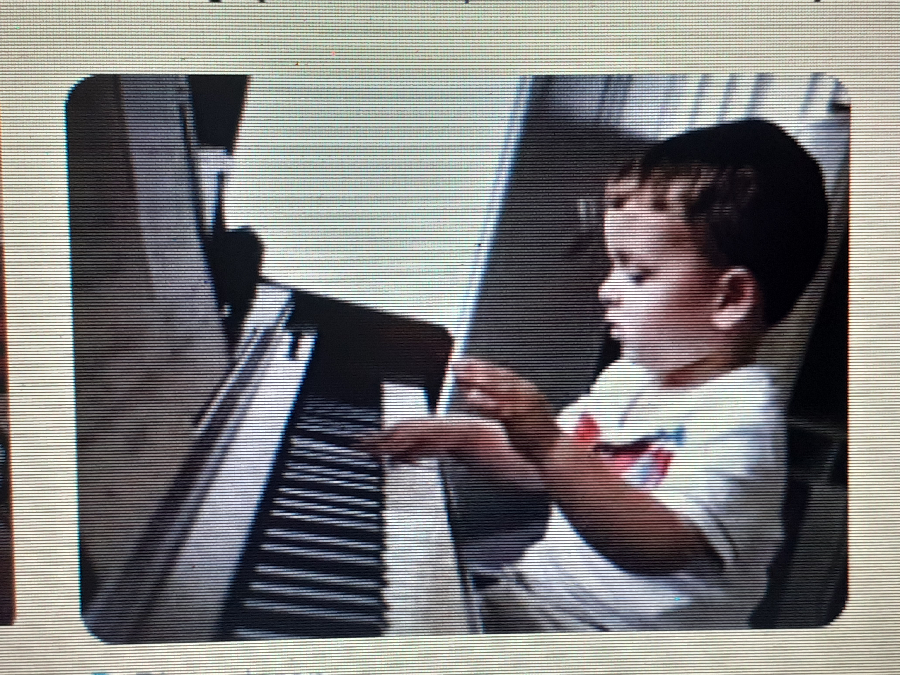

Pianospelen voor beginners.
Pianospel
 Wanneer begin je met piano spelen? Je kunt niet vroeg genoeg beginnen met piano spelen, wil je hier goed in worden. Het vereist concentratie en discipline om goed piano te kunnen spelen. Maar het belangrijkste is dat je er plezier, blijheid en voldoening uit haalt. Niet iedereen kan of hoeft een pianovirtuoos te worden. Of je nou voor het eerst begint met pianospelen, of enkele maanden of jaren piano speelt, houdt het volgende in gedachte: iedereen heeft z'n eigen talent en ontwikkeld zich in z'n eigen tempo.
Hoe speel je piano? Je houdt beide handen in zo'n positie alsof je een appel vasthoudt. Vanuit deze positie kun je melodieën spelen. Het is een kwestie van oefenen, als beginner kan je weleens afwijken van deze positie. But don't worry about a thing, every little thing gone a be alright! Wil je goed worden in piano spelen, dan is het je wel aan te raden regelmatig piano te spelen. Drie keer in de week een half uur spelen is een mooi begin.
 Je kunt zowel noten als akkoorden spelen. Een noot speel je met één
vinger en een akkoord meestal met drie vingers. Verder heb ik het hier
in het kort over de losse noten en niet over de akkoorden. De losse
noten zijn de c, d, e, f, g, a en b vervolgens krijg je weer de c. Dit
zijn de witten toetsen. Dan heb je nog de cis, dis, fis, gis en ais
dit zijn de zwarte toetsen. In een ander geval worden de zwarte
toetsen ook wel des es ges as bes genoemd. Maar dit mag je snel
vergeten, hier krijg je later nog mee te maken.
Je kunt zowel noten als akkoorden spelen. Een noot speel je met één
vinger en een akkoord meestal met drie vingers. Verder heb ik het hier
in het kort over de losse noten en niet over de akkoorden. De losse
noten zijn de c, d, e, f, g, a en b vervolgens krijg je weer de c. Dit
zijn de witten toetsen. Dan heb je nog de cis, dis, fis, gis en ais
dit zijn de zwarte toetsen. In een ander geval worden de zwarte
toetsen ook wel des es ges as bes genoemd. Maar dit mag je snel
vergeten, hier krijg je later nog mee te maken.
Een goede manier om piano te leren spelen. Is het leren spelen van toonladders. Bijvoorbeeld de toonladder c. Je speelt c, d, e, f, g, a, b en vervolgens eindig je bij de c die je hoger speelt dan de c waar je mee begon. Mocht je de toonladder c goed kunnen spelen probeer dan ook de toonladders d, e, f, g, a en b te spelen. Om dit te leren spelen kan je op pianoles gaan of misschien op youtube pianolessen volgen.